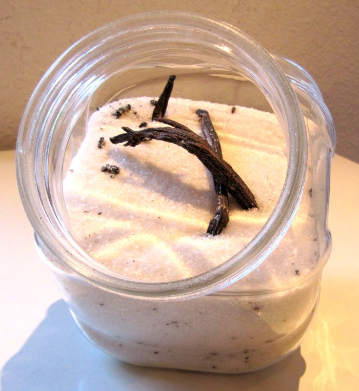

|  |
Mi is az a vaníliás cukor?A vaníliás cukor a vanília termésével (vaníliarúddal) ízesített cukor. (Nem tévesztendő össze az olcsóbb vanillincukorral, amely a vanília hatóanyagának, a vanillinnak a mesterségesen előállított változatát tartalmazza.) A német élelmiszeriparban alkalmazott meghatározás szerint a vaníliás cukornak 8 grammonként legalább 0,5 gramm őrölt vaníliarudat vagy ennek kivonatát kell tartalmaznia. A magyar konyha számos hagyományos cukrászati termékben használja, többek között a dobostorta krémjében, az Esterházy-torta krémjében, valamint még a krémesben is. |